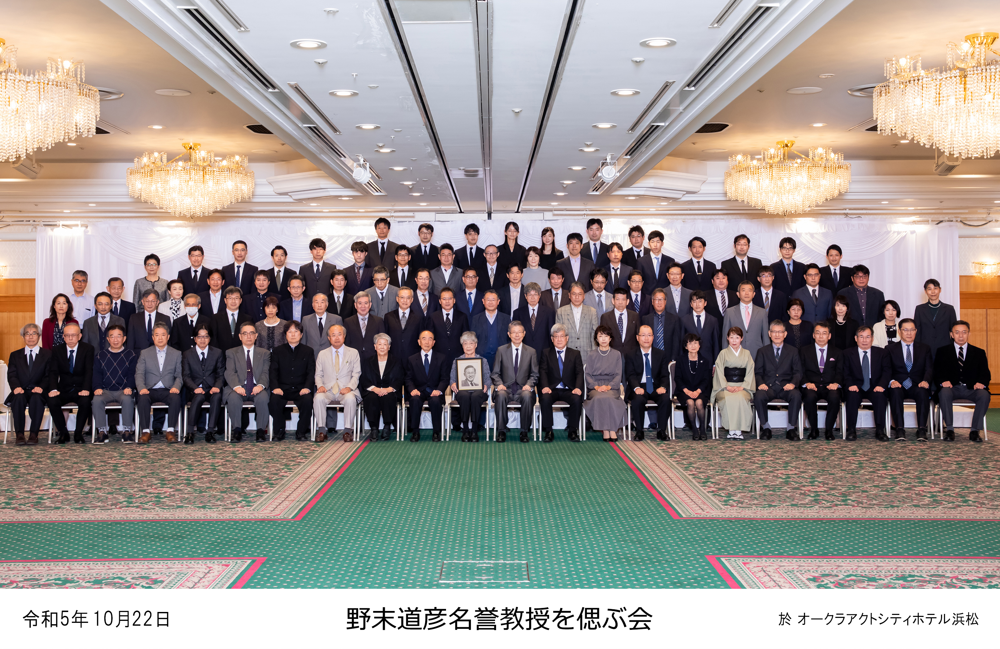
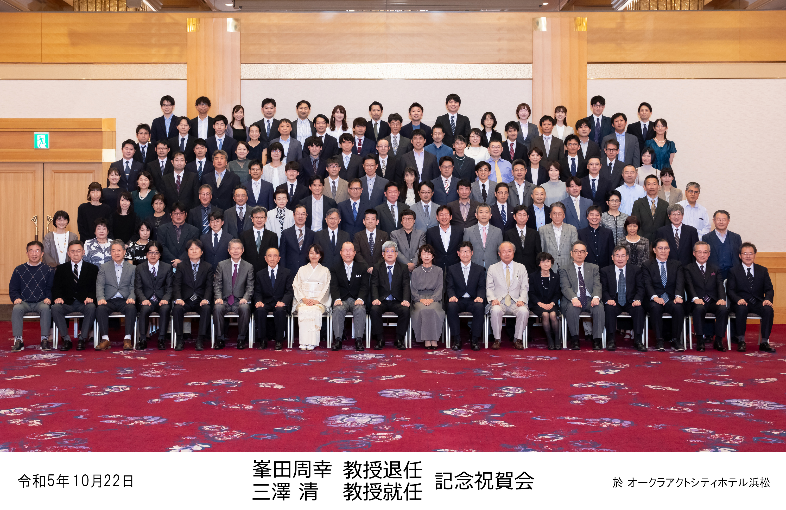

野末道彦名誉教授を偲ぶ会、峯田周幸教授退任、三澤清教授就任、瀧澤義徳准教授就任の記念祝賀会
開催日：令和5年10月22日 | 報告日：令和5年10月27日
令和5年10月22日に野末道彦名誉教授を偲ぶ会、峯田周幸教授退任、三澤清教授就任、瀧澤義徳准教授就任の記念祝賀会が開催されました。コロナ禍のために同門会員が集う会は約4年ぶりであり、久々の対面を喜ぶ面々を垣間見ることができました。


偲ぶ会は87名、祝賀会は119名と多くの皆様方にご列席賜りました。野末先生、峯田先生、三澤先生、瀧澤先生のこれまでのご功績やお人柄の紹介に留まらず、普段窺い知ることのない貴重なエピソード話を15名もの皆様方に分けていただくことで、殊更にかけがえのない貴重な時間を過ごすことができたと思います。また、祝賀会では令和6年度入局予定の2年目初期研修医5名の力強い決意表明も行われました。
浜松医科大学耳鼻咽喉科教室は、昭和52年の開設以来、多くの恩師に恵まれ今日を迎えるまでに至りました。先人の良き伝統と、現代社会の多様性に即した新たな革新の融合を図りつつ、今後の更なる発展に向けて日々精進していく決意を新たにした所存です。皆様方には引き続き倍旧のご厚情賜りますよう存じ上げます。
このような前例のない合同会の準備に尽力いただいた、同門会員・医局員、喜夛淳哉先生・杉山夏樹先生、竹内一隆先生をはじめとした大学医局員の皆様に心より感謝申し上げます。